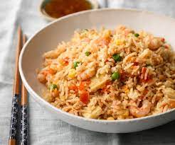

Fried Rice

Description
This is one of my go-to's meals when I'm out of time and want something delicious. It's not complicated
and it only takes 10 minutes. The perfect meal.
Ingredients
- Rice
- Garlic
- Green Onion
- Eggs
- Meat
- Carrot
- Soy Sauce
- Oil
Steps
- Cook rice or microwave during 3 minutes left-over rice.
- Chop garlic, green onion and carrot into small bite-size pieces.
- Beat the eggs and add some salt
- Add oil to the pan and cook the eggs until done. Then, take them off into a plate
- Add oil to the pan and add garlic, green onion and carrot, cook for a couple of minutes.
- Add rice, cook for a while, and add soy sauce and some salt.
- Done!
Return to Main Page